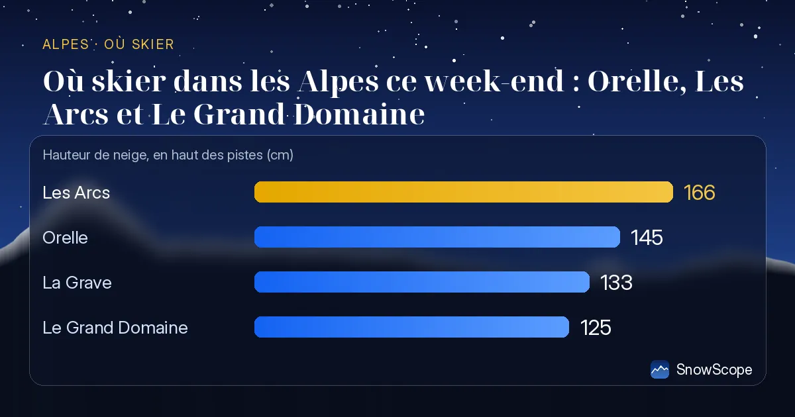

Où skier dans les Alpes ce week-end : Orelle, Les Arcs et Le Grand Domaine
Ce week-end apporte à la fois de la profondeur et de la neige fraîche dans les Alpes du nord. Les Arcs domine avec 166 cm en altitude, suivi d'Orelle à 145 cm et du Grand Domaine à 125 cm. D'ici dimanche soir, la prévision ajoute 77 à 107 cm selon l'endroit.
Consultez les prévisions neige en temps réel pour Orelle sur l'application SnowScopeHauteurs de neige, alertes poudreuse et carte 3D, gratuitement.
Quelle station, quelle altitude
Les Arcs retient le plus de neige en ce moment : 166 cm au sommet (3 205 m), mais seulement 4 cm en bas (1 222 m). L'écart compte car la neige de début de saison est mince en basse altitude et les plaques minces cachent les rochers. Orelle affiche 145 cm en haut (3 221 m) et 36 cm en bas (2 338 m). Le Grand Domaine, plus bas dans l'ensemble, a 125 cm en haut (2 516 m) et seulement 8 cm en bas (1 219 m).
Restez sur les pistes d'altitude et privilégiez les pistes damées. La carte de neige montre où le meilleur manteau se trouve ; consultez le site de la station pour confirmer quels remontées fonctionnent.
| Station | Hauteur de neige | Neige fraîche, 72 h | Attendu, jours suivants | Sommet |
|---|---|---|---|---|
| Orelle | 145 cm | 143 cm | 92 cm | 3 221 m |
| Les Arcs | 166 cm | 134 cm | 77 cm | 3 205 m |
| Le Grand Domaine | 125 cm | 129 cm | 107 cm | 2 516 m |
| La Grave | 133 cm | 122 cm | 108 cm | 3 543 m |

Neige attendue au cours des trois prochains jours
Samedi apporte peu : environ 7 à 8 cm partout. Dimanche est l'événement principal. Orelle reçoit 65 cm, Les Arcs 52 cm, et Le Grand Domaine 71 cm. Lundi ajoute 20 à 29 cm supplémentaires.
Totaux lundi soir : Orelle gagne 92 cm dès maintenant, Les Arcs 77 cm, Le Grand Domaine 107 cm. Cette neige fraîche sera votre meilleur ski—douce, indulgente, et clément pour les rochers cachés sous la couche de base mince.

Risque de neige mouillée et quand skier
Samedi, le niveau de congélation monte à 2 000–2 740 m aux Arcs et 1 920–2 860 m au Grand Domaine. Cela signifie que les pistes basses peuvent devenir pâteuses l'après-midi. À Orelle, la plage est 2 360–2 600 m, donc la base à 2 338 m se situe juste à la limite.
Dimanche est plus froid : à Orelle, le niveau de congélation tombe à 2 100–2 780 m ; aux Arcs il descend à 1 350–1 760 m. Cela verrouille la neige hivernale sur vos pistes d'altitude. Skiez tôt et restez en altitude samedi ; les conditions de dimanche seront plus stables toute la journée.
Profondeur de neige au cours des hivers passés
À mi-montagne (2 779 m), Orelle se situe actuellement plus profond qu'il ne l'était dans 17 des 46 derniers mois de novembre à cette date. Sa profondeur à mi-hauteur aujourd'hui est d'environ 61 cm ; la valeur typique de mi-novembre est 64 cm. Cette saison est donc à peu près conforme, pas en avance.
Les Arcs à mi-montagne (2 213 m) retient 38 cm, plus profond qu'il ne l'était dans 28 des 46 derniers mois de novembre—un solide démarrage en début de saison. Le Grand Domaine à la même altitude (1 867 m) a 31 cm, plus profond que 27 mois de novembre passés. Les deux tournent à une bonne moyenne pour début novembre.
Choisir entre les trois
Les Arcs a le plus de neige actuellement et retiendra mieux la neige sur toutes les altitudes après l'arrivée de la neige fraîche dimanche. Orelle est forte aussi et légèrement plus haute dans l'ensemble. Le Grand Domaine gagnera le plus de neige en poids mais part plus bas et peut perdre du manteau plus vite sur les pentes exposées au sud.
Choisissez Les Arcs ou Orelle pour la meilleure persistance de neige. Tous deux ont du bon terrain exposé au nord et des altitudes élevées. Les petites foules trouvent souvent le même manteau à quelques minutes du leader ; l'appli montre l'ensemble du tableau.
Avant de partir
Consultez le site de chaque station pour les ouvertures et fermetures de remontées. Les opérations en début de saison varient semaine après semaine. Confirmez la prévision une fois de plus vendredi soir ; les prévisions à court terme changent.
Avant tout ski hors-piste ou randonnée, lisez le bulletin officiel d'avalanche pour votre région. Les pentes exposées au nord et les ravins ombragés retiennent la neige le plus longtemps et sont souvent plus sûrs. Évitez les pistes exposées au sud dans la partie chaude de l'après-midi, surtout samedi.
Conseils aux skieurs
- Skiez en altitude : Les Arcs et Orelle ont tous deux du terrain au-dessus de 3 200 m où la neige fraîche restera froide et praticable toute la fin de semaine.
- Samedi après-midi : attendez-vous à de la soupe sur les pistes au-dessous de 2 400 m. Partez tôt ou privilégiez les pentes exposées au nord et l'ombre.
- Dimanche matin onwards : les niveaux de congélation plongent, donc les pistes basses s'améliorent et deviennent plus sûres. Les conditions se stabilisent.
- Les rochers se cachent sous la neige de base mince sur les trois stations. Restez sur les pistes ouvertes jusqu'à l'arrivée de la neige fraîche dimanche.
- La profondeur de neige en début de saison chute fortement avec la perte d'altitude. Aux Arcs, la base retient presque pas de neige ; ne prévoyez pas de skier depuis le sommet samedi.
À propos de ces chiffres
Les hauteurs de neige des stations sont la neige la plus épaisse sur le haut du domaine à la date indiquée ; ce sont des estimations pour une zone, pas une mesure en un point. Les prévisions peuvent changer. Consultez toujours le bulletin d'avalanche officiel avant le hors-piste.
Bulletins d'avalanche officiels: EAWS (Alps)
Citer ce bulletin
Pour la recherche, l'enseignement ou la presse : chiffres et graphiques réutilisables librement sous CC BY 4.0 avec cette citation.
SnowScope (2026), Où skier dans les Alpes ce week-end : Orelle, Les Arcs et Le Grand Domaine, https://snowscope.app/blog/fr/2026/11/alps-where-to-ski-this-weekend-20-november-2026.html, consulté le 2026-11-20
SnowScope (Atlas Labs). (2026, November 20). Où skier dans les Alpes ce week-end : Orelle, Les Arcs et Le Grand Domaine. SnowScope snow reports. https://snowscope.app/blog/fr/2026/11/alps-where-to-ski-this-weekend-20-november-2026.html
BibTeX
@misc{snowscope2026alpswheretoskithisweeken,
author = {{SnowScope (Atlas Labs)}},
title = {Où skier dans les Alpes ce week-end : Orelle, Les Arcs et Le Grand Domaine},
year = {2026},
month = nov,
howpublished = {\url{https://snowscope.app/blog/fr/2026/11/alps-where-to-ski-this-weekend-20-november-2026.html}},
note = {Published 2026-11-21 10:57 UTC; accessed 2026-11-20}
}· CC BY 4.0 · Méthodes, données et outils →
Orelle : neige et température selon l'altitude, cet hiver vs l'hiver dernier (outils) →
Suivre Orelle
Gratuit : un message quand la neige arrive, et la météo chaque matin.